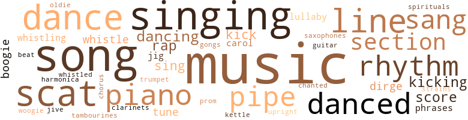
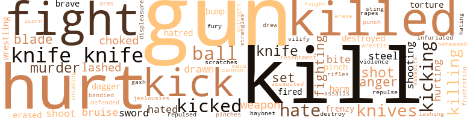
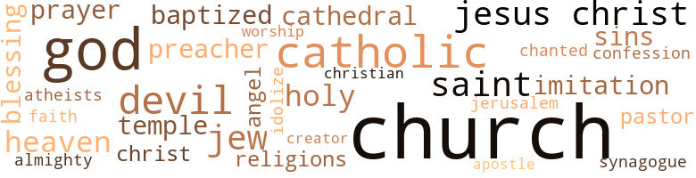

Let No Man Write My Epitaph, by Motley, Willard (1958)
202 music-related terms matched in this text.
Most frequent terms in this topic: music (25); singing (15); song (13); dance (11); scat (10)
boogie.n.01
Definition: an instrumental version of the blues (especially for piano)
| word | sentence |
|---|---|
| boogie | And she does her teaching With a boogie beat . . . Tlicy torched up again . |
| boogie-woogie | To educate the kids And really make them fit To say their A , B , C 's With rhythm and ease . . . Lee was in such a hurry . . . Well , reddin ' , writin ' , a rith me tic . . . that he opened his vein wide for the tip of the eyedropper to enter easily ... Is ever complete without a boogie-woogie beat . . . well , all reet . . . " What 's happening , man ? " someone asked Carl . |
| boogie | And she does her teaching With a boogie beat Teaching the A , B , C 's With rhythm and ease . . . " I know two fellows on stuff for twenty years , man , and the veins in their arms and legs and back of their necks are burned out . " |
carol.n.01
Definition: joyful religious song celebrating the birth of Christ
| word | sentence |
|---|---|
| carols | And they sat on the floor , leaning against the bed and the wall in a circle , all getting drunk and singing Christmas carols together . |
| carol | " Shall we sing another carol ? " |
chorus.n.01
Definition: any utterance produced simultaneously by a group
| word | sentence |
|---|---|
| chorus | In the street , in a chorus , the autumn leaves of yesterday 's newspapers gossip in the gutter , blown here and there , under streetcar and automobile and passing feet . |
clarinet.n.01
Definition: a single-reed instrument with a straight tube
| word | sentence |
|---|---|
| clarinets | The notes from the juke box matched their movements , notes that slithered out of the open lips of saxophones and clarinets , * notes that seemed to copulate --- and Ruth Brown sang : Theeeeeeey 're lovin ' next doali Theeeeeeey 're lovin ' up-staaaaairs People in my house Theeeeeeey 're lovin ' eeeeeeeverywhere . . . Fran entered the bar and dropped her eyes away from Juan 's face . |
cornet.n.01
Definition: a brass musical instrument with a brilliant tone; has a narrow tube and a flared bell and is played by means of valves
| word | sentence |
|---|---|
| trumpet | The puff - pouted red and black lips of a Negro on a trumpet , red where the blackness of the lips stopped . |
dance.n.01
Definition: an artistic form of nonverbal communication
| word | sentence |
|---|---|
| dance | And the man in a grotesque , leg-twisting dance fell to the floor in a fit . |
| dance | Hopping around alone on the sawdust floor , holding her coat open and sawing back and forth with her body in a dance motion , though there was no music , was an old drunken woman , gray hair streaming down her back and over her face , half biding it . |
| dance | Go dance with this one and that one . " |
| dance | There was going to be a big dance at the Marconi Auditorium . |
| dance | They went to the dance . |
| dance | Daddy . . . Daddy . . . " The girls are ugly , bold , fat or skinny , pimpled , they dance with each other to the lewd lick of needle on record inside the cathedral of a juke box , to attract men ; or dance by themselves for the same purpose , shaking what little or what too much they have of themselves --- like slave masters exhibiting slaves . |
| dance | Then dance with the men . |
dance.v.02
Definition: move in a pattern; usually to musical accompaniment; do or perform a dance
| word | sentence |
|---|---|
| danced | The coins danced a moment in the hot July sunlight , then fell to the dirty sidewalk and rolled away , one into the gutter , the other to the curb . |
| dancing | WeeeUl , it must be rabbit 'Cause mink do n't feel that way Weeelll , it must he rabbit 'Cause mink do n't feel that way Do n't you talk that talk Do n't believe a thing you say . . . And now Big Flora was dancing alone in the center of the floor , throwing her huge arms above her head , wiggling in front and behind , sawing her stomach back and forth , grinding her huge buttocks in a circle . |
dance.v.03
Definition: skip, leap, or move up and down or sideways
| word | sentence |
|---|---|
| dance | They made the living artists dance to their tunc , nicy said all the bright and not new things . |
| danced | There was a broad high-stepping up from the dressing room to the stage , with a red cadet 's cap on her head , cocked to one side , a long white plume going up from the stiff bill of the cap and curving over her head , moving up and down as she danced . |
| danced | Her behind , with the crescent of panties slipping down , rolled like the drums , shimmied like jelly on a plate , quivered violently , faster --- faster --- She danced . |
| danced | And she hopped to the bar , danced along the bar , with men sweating and staring up . |
| danced | And she danced among the tables , among the customers . |
| danced | And as she danced , pausing , shaking , bumping and grinding , Louie grabbed her and kissed the little pink panties . |
| dance | There had been people lined up against the wall , watching , waiting to dance . |
| danced | People danced , rubbing their bodies together . |
| dance | They got up to dance . |
| dancing | She plucked another , saying , " A child will always , always blink and blow , " and again Nick , laughing delightedly , blew and , blinking his eyes open this time , saw all the little silky people go dancing out onto the air and then slowly settle to the ground where Mother said next year they would be shining little yellow faces . |
| danced | They put only one record on the phonograph , and it played over and over : Down around the corner In a little school Children learn their lessons And the Golden Rule . . . They danced , girls and boys in blue jeans , boys with their shirts out of their pants sloppily , girls chewing gum , dragging on marijuana cigarettes . |
| dancing | She got up and started dancing toward the juke box . |
| dancing | He looked up , surprised , pleased , his eyes dancing in his aged face . |
| dance | Daddy . . . Daddy . . . " The girls are ugly , bold , fat or skinny , pimpled , they dance with each other to the lewd lick of needle on record inside the cathedral of a juke box , to attract men ; or dance by themselves for the same purpose , shaking what little or what too much they have of themselves --- like slave masters exhibiting slaves . |
| Dancing | Dancing with old men in caps , high shoes , men old enough to be their fathers . |
| Dancing | " Daddy . . . Daddy . . . " Dancing with young men in T-shirts , men young enough to be their sons . |
dirge.n.01
Definition: a song or hymn of mourning composed or performed as a memorial to a dead person
| word | sentence |
|---|---|
| dirge | She hummed it like a dirge . |
| dirge | From inside the bedroom door Ma Romano 's voice carried , singing a lullaby as if it were a dirge . |
| dirge | Their funeral dirge is the juke box played so loudly that they have to shout to hear each other , tombstone to tombstone . |
gong.n.01
Definition: a percussion instrument consisting of a metal plate that is struck with a softheaded drumstick
| word | sentence |
|---|---|
| gongs | The juke box in the tavern next door was competing winningly against the clanging of streetcar gongs . |
guitar.n.01
Definition: a stringed instrument usually having six strings; played by strumming or plucking
| word | sentence |
|---|---|
| guitar | Wliitcy , who had walked over , said , " I 've got a guitar down the street --- locked lip in the pawnshop . " |
harmonica.n.01
Definition: a small rectangular free-reed instrument having a row of free reeds set back in air holes and played by blowing into the desired hole
| word | sentence |
|---|---|
| harmonica | There was a jumping jack and there was a harmonica . |
jig.n.01
Definition: music in three-four time for dancing a jig
| word | sentence |
|---|---|
| jig | This made him cackle with laughter and he did a little jig to the bar . |
| jig | He cackled again and , throwing up one hand , its white palm flashing , did a slow-footed jig . |
kettle.n.04
Definition: a large hemispherical brass or copper percussion instrument with a drumhead that can be tuned by adjusting the tension on it
| word | sentence |
|---|---|
| kettle | Now the Salvation Army Santa Claus was on the corner with his iron kettle and clanging bell . |
kick.v.04
Definition: kick a leg up
| word | sentence |
|---|---|
| kicking | They stood , not looking at each other , pushing the soles of their shoes against the embers and red-tipped sticks of wood , kicking dirt onto the hot ashes . |
| kick | Else they kick you out . |
| kick | They had to kick us out of this joint . |
| kicking | ■ m They started to walk again , but he circled backj gf4.t fits pebble with the toe of his shoe and began - kicking it along in front of them . |
| kick | Hie women continued to kick their heels against the cross-bar of the streetcar stand . |
| kicking | Again they sat on a Maxwell Street stand talking and kicking their heels against the bottom support . |
| kicking | He lowered his head , looking at his shoes , kicking them along the sidewalk in sadness , hurt . |
| kicking | They often ate lunch together and sat kicking their heels against the stone embankment in front of school and talked about books they were reading and which authors " sent " them . |
| kick | But they do n't kick you out . |
lullaby.n.01
Definition: a quiet song intended to lull a child to sleep
| word | sentence |
|---|---|
| lullaby | From behind the bedroom door they could hear Ma Romano humming a lullaby . |
| lullaby | From inside the bedroom door Ma Romano 's voice carried , singing a lullaby as if it were a dirge . |
music.n.01
Definition: an artistic form of auditory communication incorporating instrumental or vocal tones in a structured and continuous manner
| word | sentence |
|---|---|
| music | She taught him to appreciate music , the mind , the arts , and insisted that his manners be courtly . |
| music | Hopping around alone on the sawdust floor , holding her coat open and sawing back and forth with her body in a dance motion , though there was no music , was an old drunken woman , gray hair streaming down her back and over her face , half biding it . |
| music | And he never thought that there were young people his age who could talk like that about art and literature and music . |
| music | Then , after dinner , they listened to classical records together , lying on the floor , she in slacks , Nick 's solemn eyes --- his chin perched in his palms , his elbows on the floor --- going from the sounds of the music to her face , then to his drawings scattered there on the floor around them like leaves , back to the music , then secretly and sad to her profile . |
| music | Then , after dinner , they listened to classical records together , lying on the floor , she in slacks , Nick 's solemn eyes --- his chin perched in his palms , his elbows on the floor --- going from the sounds of the music to her face , then to his drawings scattered there on the floor around them like leaves , back to the music , then secretly and sad to her profile . |
| music | She gave them the works , lire music was a repeated rhythm with a lot of wiggles in it . |
| music | Her body was intimate with every wiggling note of the music ; they undulated together , her body and the music , lewd lovers . |
| music | Her body was intimate with every wiggling note of the music ; they undulated together , her body and the music , lewd lovers . |
| music | And the music began again . |
| music | Sometimes he lets me turn the handle and beautiful music comes out . |
| music | Then in various types of concentration , llic music was loud and sensual and definitely Negro-style . |
| music | Only now , entering the house , taking off their coats , smiling and greeting each other ; holding cocktail glasses , listening to records , dancing , talking together about little trifling things , and things like books , classical music , concerts , politics ; buffet snack later --- in this little oasis of bookcase and chairs , phonograph , cocktail table and wall photographs , refilling glasses , talking together , each marked the same , each marked by one thing --- only now could they smile and be themselves . |
| music | " You know , they got good music in that neighborhood , " she said . |
| music | I like that music . " |
| music | All 'll show you-nll some real music ! " he scratched again . |
| music | So drop another nickel In the machine I 'm feelin ' so bad I wish you 'd make the music Dreamy and sad . . . Louie leaned with his elbows against the bar . |
| music | ' Hie second-hand record shop with music already blasting the neighborhood from scratchy records . |
| music | They crowded around her , clapping hands rhythmically , keeping time to the music , shouting , " Shake it but do n't break it ! " |
| music | From a radio cabinet in the other room came soft music and from the room , too , came a man 's voice asking , " Who is it , Ruth ? " |
| music | The music catches his feet and tangles there . |
| music | He begins a slow , comic shuffle in time to the music across the stage of the Marquis window . |
| music | It is turned to its top volume : He 's in the jailliouse now He 's in the jailhouse now . . . The music shouts to the walls until they seem to shake back and forth . |
| music | The music shouts to the far door , to the street , to the other side of the street , to people passing in cars . |
| music | The music assails like an army with cannon . |
| music | lie 's in the jailhouse now lie 's in the jailhouse now . . . With the music , throughout the tavern , heavy , floating on the air , sickening , muggy at the door and out across the sidewalk , is the acrid smell of the brown-stained urinals . |
| Music | Music goes on and drinks keep coming . |
oldie.n.01
Definition: a song that was formerly popular
| word | sentence |
|---|---|
| oldie | Make believe . . . " That 's an oldie , " Louie said . |
phrase.n.02
Definition: a short musical passage
| word | sentence |
|---|---|
| phrases | He polished up the phrases but brought in the innuendo that would bring fear and panic to his father : I need four hundred dollars to hush this thing up . |
| phrases | He leaned back now , savoring it , going over , in his mind , some of the phrases . |
piano.n.01
Definition: a keyboard instrument that is played by depressing keys that cause hammers to strike tuned strings and produce sounds
| word | sentence |
|---|---|
| pianos | The tinny jazz notes of out-of-tune pianos banging against the street noises , the hunched back of the player crouched , as over a victim , over the chipped and yellowed keys . |
| piano | She said , " I was lousy on the piano and I 'm pretty lousy at painting , too . |
| piano | She said , " I think I looked out of my cradle at a piano . |
| piano | They went into a housing project and into a nice apartment with a piano , a television set and a bicycle in the kitchen . |
| piano | And an upright piano that Jane had failed to learn to play but Briddie Darling would conquer . |
| piano | A broomstick of a man , with a gaunt , tight-skinned face , stood half in shadow , leaning against a piano as broken-down as the guests in the establishment . |
| piano | He tossed again , again spinning the quarter in the air and letting it fall to the floor ; and as lie stooped to pick it up after each toss and rose again , the man propped against the piano , as if propped against life , followed his bending and rising with his eyes . |
| piano | The owl-eyed man edged his way from the piano to the bar , near Louie . |
pipe.n.04
Definition: a tubular wind instrument
| word | sentence |
|---|---|
| pipe | They hit him with a brick , a blackjack or a piece of pipe . |
| pipe | " My grandmother smokes a pipe . |
| pipes | A slight hissing from the water pipes . |
| pipe | His throat sounds like the gurgling in a water pipe . |
| pipes | The tendons in his neck would stick out like water pipes . |
| pipe | She had a corncob pipe in her mouth , a bony hand holding it in place as she puffed on it contentedly . |
| pipe | " You jump out of the water pipe at us , " she protested . |
promenade.n.01
Definition: a formal ball held for a school class toward the end of the academic year
| word | sentence |
|---|---|
| prom | Even the night made promises . |
rap.n.05
Definition: genre of African-American music of the 1980s and 1990s in which rhyming lyrics are chanted to a musical accompaniment; several forms of rap have emerged
| word | sentence |
|---|---|
| rap | If the rap was too bad the kiddies even told lum to cut out . |
| rap | Or even into the ^ interior , for a matter of fact , just as long as he would n't be around to face that rap . |
| rap | The Indian girl and the yellow rose have decided to pose as man and wife and maybe beat the rap . |
| rap | Why should we get the rap for it ? |
| rap | It 's a federal rap now . " |
rhythm.n.01
Definition: the basic rhythmic unit in a piece of music
| word | sentence |
|---|---|
| beat | Lillian is a school store clerk on my beat , twelve dollars a week , three kids --- abandoned by a drunkard in a small town in Michigan . |
rhythm.n.04
Definition: the arrangement of spoken words alternating stressed and unstressed elements
| word | sentence |
|---|---|
| rhythm | She gave them the works , lire music was a repeated rhythm with a lot of wiggles in it . |
| rhythm | To learn their A , B , C 's With rhythm and ease . . . " Only the unnatural forms , " Carl said . |
| rhythm | To educate the kids And really make them fit To say their A , B , C 's With rhythm and ease . . . Lee was in such a hurry . . . Well , reddin ' , writin ' , a rith me tic . . . that he opened his vein wide for the tip of the eyedropper to enter easily ... Is ever complete without a boogie-woogie beat . . . well , all reet . . . " What 's happening , man ? " someone asked Carl . |
| rhythm | And she does her teaching With a boogie beat Teaching the A , B , C 's With rhythm and ease . . . " I know two fellows on stuff for twenty years , man , and the veins in their arms and legs and back of their necks are burned out . " |
| rhythm | The little group claps hands in rhythm . |
| rhythm | They are clapping their hands in rhythm . |
| rhythm | Their hands beat out the rhythm . |
sax.n.02
Definition: a single-reed woodwind with a conical bore
| word | sentence |
|---|---|
| saxophones | The notes from the juke box matched their movements , notes that slithered out of the open lips of saxophones and clarinets , * notes that seemed to copulate --- and Ruth Brown sang : Theeeeeeey 're lovin ' next doali Theeeeeeey 're lovin ' up-staaaaairs People in my house Theeeeeeey 're lovin ' eeeeeeeverywhere . . . Fran entered the bar and dropped her eyes away from Juan 's face . |
scat.n.01
Definition: singing jazz; the singer substitutes nonsense syllables for the words of the song and tries to sound like a musical instrument
| word | sentence |
|---|---|
| scat | Then : " So when we got on the scat of the wagon " --- laughing , half humorously --- " the first thing my partner says , he says , ' For Christsakc we 're going to have to go like a sonofabitch to get through work on time . ' " |
| scat | " Dump 'em behind the scat and leave 'em . " |
| scat | lie turned on the scat of the chair , toward her . |
| scat | And on the streetcar he made them sit together on the scat in front of him . |
| scat | " Ai n't he cute ! " a girl in the scat behind Nellie whispered to another expectant mother . |
| scat | A stale bun peeped out of his back pocket above the dirty scat of his pants . |
| scat | The Wolf sat on the sun-warmed upholstered scat of the convertible , smiling at his field . |
| scat | He slumped down in the scat and sighed and he and his partner watched with keen eyes the people who walked the sidewalk under the night sky in the broken-down neighborhood . |
| scat | She had her head back against the scat and tears ran down her black face . |
| scats | Hie row of three chairs in the waiting room had dust-collected scats . |
| scats | Grinning and happy , looking out over the scats , over the faces for his mother 's face . |
| scat | His buttocks , in creased midnight-blue trousers , for the hot scat . |
score.n.02
Definition: a written form of a musical composition; parts for different instruments appear on separate staves on large pages
| word | sentence |
|---|---|
| Score | " Score us in on what you 're talking about , Judge , " Phil said , his hand affectionately on the old man 's shoulder . |
| score | " What 's the score ? " |
| score | " What 's the score ? " |
| score | Phil 's eyes , in the match-flare , said thanks , and what 's the score , and what do you want , then --- go ahead . |
| score | And a voice cuts across the bar --- " Man , I want to make a score ! " a young , rough-trade guy says in loud invitation to any man who wants to go . |
section.n.01
Definition: a self-contained part of a larger composition (written or musical)
| word | sentence |
|---|---|
| section | We went over to the other section of town with everything you could think of . |
| section | We moved over to the other section of town . |
| section | Spread out on her knees , turned to the horse-racing section , was the morning edition of the afternoon paper . |
| section | It smacks above the heads of waitress and bartender and into the section of long back-bar mirror , bringing the mirror down in a hail of angrily crying glass . |
| section | " You see it says --- it says right here in this book --- wait --- " She started thumbing through the book and at length came to a section . |
| section | They stood with the section of thick glass between them , their heads down , not looking at each other . |
sing.v.02
Definition: produce tones with the voice
| word | sentence |
|---|---|
| singing | Little Nick was a baby and she was singing to him . |
| singing | From inside the bedroom door Ma Romano 's voice carried , singing a lullaby as if it were a dirge . |
| sang | He sat w-ith his feet propped up and his hat on the back of his head , and he sang loudly , his voice carrying the length of the car . |
| sings | My mother sings spirituals . " |
| sings | But the lady that sings , I do n't like her because she is real fat in front and wears hardly no clothes . |
| sing | His voice filled the room , sometimes lusty , sometimes whispering : " I celebrate myself , and sing myself , And what I assume you shall assume , For every atom belonging to me as good belongs to you . " |
| singing | He was singing the hill billy line of a cowboy song . |
| sing | " Shall we sing another carol ? " |
| sang | She half sang , in a humorous southern dialect , " ' You boys is gettin ' out of hand . |
| sang | Behind him Ruth Brown sang : I want to go NORTHI EAST ! |
| sang | Big Flora belle sang them sonorously in her musical voice , not missing a word . |
| sang | From the brilliantly lighted theater of the juke box Ruth Brown sang , with the orchestra backing her up in blue brass : J can seeeeee Eeeeeeevery-body 's babe I do n't see mi ne . . . Three Negro couples danced , eyes sleepy , bodies clinging close together . |
| sang | The notes from the juke box matched their movements , notes that slithered out of the open lips of saxophones and clarinets , * notes that seemed to copulate --- and Ruth Brown sang : Theeeeeeey 're lovin ' next doali Theeeeeeey 're lovin ' up-staaaaairs People in my house Theeeeeeey 're lovin ' eeeeeeeverywhere . . . Fran entered the bar and dropped her eyes away from Juan 's face . |
| sang | And they sang the school song . |
singing.n.01
Definition: the act of singing vocal music
| word | sentence |
|---|---|
| singing | Inside the tavern window the upper half of a woman , silver - dyed hair , smear of red lips singing into a microphone . |
| singing | She is patting her hands together like a child in time to the juke box and singing the song it blares . |
| singing | And they are all singing , " ' Have you ever been lonely And the night fix and back to the bar . |
| singing | He came singing , " ' God rest ye merry , gentlemen ! |
| singing | And they sat on the floor , leaning against the bed and the wall in a circle , all getting drunk and singing Christmas carols together . |
| singing | Somewhere in some house they passed they heard a Negro woman singing in lament : " ' You ai n't the one . |
| singing | She wiggled her hands , fingers spread wide , and wiggled her shoulders , her watermelon breasts , laughing , singing it : " Do n't you talk that talk ! " |
| singing | Colored lights gyrated in a rainbow and Ruth Brown began singing : You 're crazy about love And I 'm crazy about love mah-self Weeellll , you 're crazy about love And I 'm crazy about love mah-self When I 'm with you , babe Ca n't think about nothin ' else . . . Big Flora grabbed one of the white men she knew . |
| singing | Big Flora was at the tavern window looking out and singing , " ' Do n't you talk that talk , do n't believe a thing you say . ' " |
| singing | She stopped singing and said , " Here comes mail cousin . " |
| singing | She was singing in a low , mournful voice that carried up and down the street , " ' Nobody loves me , Lord , nobody seems to care . |
| singing | They arc singing something about the Lord coming in a Cadillac . |
song.n.01
Definition: a short musical composition with words
| word | sentence |
|---|---|
| songs | Juke boxes smacked their high-pitched , falsely hilarious songs out across the sidewalk and halfway across the street in shrill blasts . |
| song | She is patting her hands together like a child in time to the juke box and singing the song it blares . |
| song | It was the song she spent a lot of her tip money on : You are my sunshine My only sunshine . . . And that 's what Nick was to her . |
| song | That 's why she loved that song . |
| song | Somebody had put a coin in the juke box and a song was playing . |
| song | She liked that song and she could read and listen at the same time . |
| song | He was singing the hill billy line of a cowboy song . |
| song | ' Ilic song had stopped . |
| song | It was the loneliest song in the world . |
| song | Louie plays the song over and over . |
| song | He never saw a guy so hot for one song . |
| song | A whole two hours of the same goddamn song . |
| song | " Okay , buddy , " Louie says , nodding his head and listening to the words of the song --- So make it one for my baby And one more for the Loooong Looone-Iy Looone-some road . . . And a phone rings in the city . |
| songs | Niggahs and knives --- They got a name for them words that sound like songs when strung along in a line . |
| song | And they sang the school song . |
| songs | And so I got in pretty good and I started talking and talking , conversationing it and crazy songs . |
spiritual.n.01
Definition: a kind of religious song originated by Blacks in the southern United States
| word | sentence |
|---|---|
| spirituals | My mother sings spirituals . " |
swing.n.05
Definition: a style of jazz played by big bands popular in the 1930s; flowing rhythms but less complex than later styles of jazz
| word | sentence |
|---|---|
| jive | I lay on the jive and Billy fills his pockets . " |
tambourine.n.01
Definition: a shallow drum with a single drumhead and with metallic disks in the sides
| word | sentence |
|---|---|
| tambourines | Some beat tambourines , others clap their hands together . |
tone.v.01
Definition: utter monotonously and repetitively and rhythmically
| word | sentence |
|---|---|
| chanted | " D and D. Drunk and disorderly , " the bailiff chanted from the sheaf of papers he held in his hand . |
tune.n.01
Definition: a succession of notes forming a distinctive sequence
| word | sentence |
|---|---|
| line | In line was the yellow rose . |
| line | The judge was saying : " There arc some nice Puerto Ricans but some of the fellows get out of line . |
| line | And the hustlers , the studs , began to converge on them in a line of inspection . |
| tune | She says to one of the men , " Come on , be a sport and get in tune . " |
| lines | It had three lines above it . |
| line | ' Aw , come on , Frankie boy --- ' because nobody would call him The Wolf to his face --- they call him Frank --- ' Frank , come on , I know you since 1935 --- ' and tried to give him a line of bull , you know . |
| line | He was singing the hill billy line of a cowboy song . |
| strains | You 're avoiding the emotional strains of life . |
| tune | We / / , readin ' , writing a-rith-me-tic Taught to the tune of a licorice stick . . . " Give me the roach , man . " |
| tune | Well , readin \ writin , a-rith-me-tic Taught to the tune of . . . While the policemen held them there , listening to their lies , their pathetic protestations of innocence , their lies , their frightened pleas for mercy , their lies , Sergeant Forbes and another officer went through the rest of the house , searching it . |
| line | Niggahs and knives --- They got a name for them words that sound like songs when strung along in a line . |
| line | He watched them file in and form a line , and his eyes went along that line . |
| line | ITicy just line up at the Bureau once a week and get them , lliat 's all . |
| lines | He had put in the oval for the head , the three lines that represented eyes , nose and mouth , the way Mr. Clemson , his art teacher , had shown him . |
upright.n.02
Definition: a piano with a vertical sounding board
| word | sentence |
|---|---|
| upright | Suddenly she sits upright on the side of the bed . |
whistle.n.01
Definition: the sound made by something moving rapidly or by steam coming out of a small aperture
| word | sentence |
|---|---|
| whistles | He whistles loudly as he unpacks his wares . |
| whistles | The notes he whistles stride along on long , firm , free-swinging legs and jostle with the passing crowd . |
whistle.v.01
Definition: make whistling sounds
| word | sentence |
|---|---|
| whistled | Outside she whistled like a man for a cab . |
| whistling | And twice he had turned and followed her several blocks , whistling tonelessly . |
| whistle | Tlicy showed him how to work it , and Judge Sullivan on his knees on the floor for the next hour simulated the train whistle , the ticket taker moving through the cars , the dining-car chimes , the waiters and porters , people getting on and off , saying hello and good-bye to friends and relatives . |
| whistling | It makes a hurried whistling sound of cloth against clqth . |
382 violence-related terms matched in this text.
Most frequent terms in this topic: knife (36); kill (29); hurt (28); gun (25); killed (24)
abrasion.n.01
Definition: an abraded area where the skin is torn or worn off
| word | sentence |
|---|---|
| scratches | I made a drawing of him once but Mother said it only looked like scratches of color . |
anger.n.01
Definition: a strong emotion; a feeling that is oriented toward some real or supposed grievance
| word | sentence |
|---|---|
| anger | But the way she looked at him was n't in anger . |
| anger | Nellie moved between tables back toward the steam table swinging the tray in her anger . |
| anger | This was another anger , another frustration . |
| anger | The men shut themselves up in their rooms all day long reading pamphlets , waiting for night , and become so savage and vicious that , when night comes , they have to go down to the square and vent all their pent-up anger . |
| anger | All his love , all his hurt turned to anger , to sarcasm . |
assail.v.01
Definition: attack someone physically or emotionally
| word | sentence |
|---|---|
| assaulted | Shame assaulted her . |
attack.v.01
Definition: launch an attack or assault on; begin hostilities or start warfare with
| word | sentence |
|---|---|
| assails | The music assails like an army with cannon . |
bandy.v.02
Definition: exchange blows
| word | sentence |
|---|---|
| bandied | They bandied the names back and forth . |
bayonet.n.01
Definition: a knife that can be fixed to the end of a rifle and used as a weapon
| word | sentence |
|---|---|
| bayonet | Open , it was like a bayonet . |
bruise.n.01
Definition: an injury that doesn't break the skin but results in some discoloration
| word | sentence |
|---|---|
| bruise | A man with matted red hair and a matching bruise on his forehead puts his arm around the slatternly Indian woman , in friendliness . |
| bruise | Loosening his clamped fingers from around her wrist she nursed the bruise with her other hand . |
| bruises | The child was kicking bruises against her legs and stomach . |
bump.n.01
Definition: a lump on the body caused by a blow
| word | sentence |
|---|---|
| bump | Hooked to the radiator cap was a stocking filled with candy and nuts , one bump showing the form of an orange . |
| bump | The nude lady , with her hands behind her head , walked past Grant and did a lewd bump , seemed to wink at him . |
cannon.n.04
Definition: heavy automatic gun fired from an airplane
| word | sentence |
|---|---|
| cannon | The music assails like an army with cannon . |
contemn.v.01
Definition: look down on with disdain
| word | sentence |
|---|---|
| scorn | Rosemary smiled a little , partly in scorn , partly in pity ; and smiled at the same time , in the same manner , at something in herself . |
craze.n.02
Definition: state of violent mental agitation
| word | sentence |
|---|---|
| frenzy | Of course he came out more often for a buy , and on top of that the immunity that was built up by his system by the added frequency of the pills made it so bad that he 'd finally get into a frenzy where he 'd do anything . |
| frenzy | Then , in a sudden frenzy , she trotted around the small stage , at its very edge , wiggling , smiling , shaking everything she had , waving her amis . |
cut.n.05
Definition: a wound made by cutting
| word | sentence |
|---|---|
| gash | She went down a broken stairway leading into a gash in the ground : a basement . |
dagger.n.01
Definition: a short knife with a pointed blade used for piercing or stabbing
| word | sentence |
|---|---|
| dagger | He holds the knife like a dagger . |
| daggers | The rain was throwing little silver daggers at the sidewalk in the night and she was walking toward him . |
decapitate.v.01
Definition: cut the head of
| word | sentence |
|---|---|
| beheaded | Because he was beheaded . |
destroy.v.04
Definition: put (an animal) to death
| word | sentence |
|---|---|
| destroyed | But that young fellow could have been destroyed --- if that captain had his way , for fear that he was not getting his cut in the dough . |
| destroy | Will I destroy him completely ? |
| destroyed | Inside the body the brain cells have been destroyed ; and all through the body the passage of the current shows its work . |
displeasure.n.01
Definition: the feeling of being displeased or annoyed or dissatisfied with someone or something
| word | sentence |
|---|---|
| displeasure | " VVliat are you doing here today , Lee ? " she asked ; and small displeasure wrinkles gathered over her pretty eyes when she saw Nick . |
draw.v.23
Definition: pull (a person) apart with four horses tied to his extremities, so as to execute him
| word | sentence |
|---|---|
| drew | He drew up a chair for her , next to him , with one of his long legs . |
| drawn | Inside the front room there was a bed , a dresser , a gas plate , some dishes in a rack over it and , by the window , a kitchen table covered with oilcloth , three chairs drawn up to it . |
| drawn | Outside the prison a taxi had drawn up . |
| drawn | Lee had a shrunken right arm ; it was drawn up as if he were leaning on a table with it or had it in a sling . |
erase.v.01
Definition: remove from memory or existence
| word | sentence |
|---|---|
| erase | ( Laughing a little ) crant : See , because when I finish with this , I erase it --- forbes : Yeah . |
| erased | Ilic sun spread out a little more and her pencil made a hesitating mark , thought better of it , flipped upside down in the fat hand and erased . |
| erased | And a little all-night restaurant , one neon sign down a black street until dawn erased the blackness and the neon closed its red eye . |
fight.n.05
Definition: a boxing or wrestling match
| word | sentence |
|---|---|
| fights | Gang fights . |
| fight | And Max had a fight , which he won , and they dragged him back to the table . |
| fights | He had more fights than any of the other fellows and he always won . |
| fight | " Why fight over this broad ? |
| fight | The fight is on the street . |
| fight | The fight is being pushed from one block to the other , back and forth , all this shooting , people ducking . |
| fight | There at the bar he ran into Cue Ball and they drank until night talking about old times , bragging about the gang wars and the big fight in South Chicago , laughing about the broads they had shacked up with together , and Louie said , " Let 's go down to West Madison . " |
| fight | She said , " Ah --- Ralph --- I want you to know that Frank says he is sorry for the --- ah , little fight and misunderstanding you guys had last night . |
| Fight | " Fight fire with fire . " |
| fight | 96 She had just had another fight with Rosemary and Aunt Rosa about Ma . |
| fights | She got the name when she was fifteen and they were still engaging in gang fights . |
| fight | I heard you went out there to the poolroom and you and another guy challenged a whole bunch of colored guys to a knife fight . " |
| fight | Nobody pays any attention in there to a fight . |
fight.v.02
Definition: fight against or resist strongly
| word | sentence |
|---|---|
| fight | Why fight them if you can join them ? |
| fight | Grant pulled his tie loose a little --- almost with the same gesture with which a man takes off his coat to fight . |
| fight | And Max wanted to fight with the bartender but they dragged him back to the table . |
| fight | She comes to Chicago with the kids and strikes out on her own to fight the social order . |
| defended | " Well , some of the time , " Aunt Rosa defended . |
| fighting | And when the fellows went to see Louie , they were still fighting it out . |
| fight | You see --- at first they began to fight with fists , but Pizarro got the best of The Wolf ; but later , with that crowd , every time The Wolf hit Ralph and he would go down , one of The Wolf 's relatives would sneak a foot in there through the crowd and kick him , you know . |
| fighting | In other words , he was n't fighting just The Wolf . |
| fighting | He was fighting the whole damn family . |
| fight | There he was , standing out there throwing pennies at a bunch of little neighborhood kids and making them fight over them . |
| fighting | lie 's fighting to get out of there . |
| fought | A bay window , framed in gray stone that was set into the flaky red brick , looked out upon a small and lumpy front yard where a few scattered hands of stubborn grass fought up through the scaly ground . |
| fight | It 's bad enough I 'm trying to fight it off . " |
| fighting | If you brought two trained dogs into the park and started them fighting , you would fill the place . |
| fight | She struggled with him , trying to fight her way inside . |
| fight | after bc ^ ng jackrolled twice , I figured the best thing was to join them rather than to fight them . |
frustration.n.03
Definition: a feeling of annoyance at being hindered or criticized
| word | sentence |
|---|---|
| frustration | This was another anger , another frustration . |
fury.n.01
Definition: a feeling of intense anger
| word | sentence |
|---|---|
| fury | Kerman , his brows knotted angrily , paced down the length of the fury rail . |
gag.v.06
Definition: cause to retch or choke
| word | sentence |
|---|---|
| choked | Back on the street , trembling fingers lit a cigarette and he choked on it . |
| choked | For something to do he tasted it ; and choked a little and was embarrassed anew . |
| choked | " I stole it from Dad 's bar , " she confided , and she took a swallow and made him take a swallow " because they all do at football games , " and they both choked and coughed and they held chilly hands under the blanket in friendship-like and laughed , and cheered for Illinois because the University of Chicago did n't have a football team . |
| choked | She choked a little on the tobacco . |
gun.n.01
Definition: a weapon that discharges a missile at high velocity (especially from a metal tube or barrel)
| word | sentence |
|---|---|
| guns | Bottles , knives , zip - guns , tire chains , bricks . |
| Gun | Gun shots of all kinds . |
| gun | She reached for my gun on the clothcs-closet shelf . |
| Guns | Guns came out . |
| gun | Armed only in the struggle for a gun , a bottle , a club . |
| guns | Chicago jumped the guys from South Chicago , who had guns because they were all scared . |
| guns | And the fellows from South Chicago did n't want to use the guns to begin with . |
| guns | And the fellows from South Chicago did know how to use guns . |
| guns | Paco had heard the shots when he was in the toilet ; they sounded like cap guns but lie knew they were bullets . |
| guns | And as they neared the car Paco saw a bullet go through the windshield : Boy , these guns mean business ! |
| gun | He flipped his gun in the direction Paco had gone . |
| gun | " Loan us your gun . " |
| gun | He knew that anything Juan and Max did or said was sincere , that they would n't mess around , go showing off with a gun . |
| gun | Just lend us the gun and nobody will know about it . " |
| gun | They celebrated the gun . |
| gun | They argued about who was going to pack the gun , do it . |
| gun | They finally agreed that each would take a day carrying the gun . |
| gun | Max , with a malicious smile , secreted the gun on his body , having won for the first day 's vigil . |
| gun | Within the towel lie has the gun . |
| gun | Drop the towel / ' Juan said , and Max put the gun into his pants . |
| gun | He does n't have a gun . |
| gun | The gun turns and looks , like a sleepy dog . |
| gun | And he emptied the gun into him . |
| guns | At the time there was a strike going on down the street at the shirt factor } ' , and people were used to seeing men go back and forth , pulling up in cars with rifles and guns on their sides , hoods protecting the scabs , and so when they heard shooting they were only mildly surprised . |
| gun | Pizarro said , " Get back in there , " and pointed the gun at her . |
| gun | Then the gun looked at The Wolf again . |
| gun | The gun looked at The Wolf --- Juan is holding Max back . |
| gun | When the gun first looked , when The Wolf saw Pizarro with the gun , he immediately peeled his knife , his blubbery lip sneering , and , blade open , started toward Pizarro . |
| gun | When the gun first looked , when The Wolf saw Pizarro with the gun , he immediately peeled his knife , his blubbery lip sneering , and , blade open , started toward Pizarro . |
| gun | Then all Pizarro had to do was to empty the gun into him . |
| gun | And Max put the gun to his head . |
| gun | Just as Juan kicked Max 's arm , the gun went off and a big cement chip of the sidewalk flew off and scattered away . |
| gun | Juan stuck him in the ribs with a forefinger held in his pocket like a gun and was saying hello . |
| gun | It was a dandelion with a silver crown the color of some of the hair that had begun creeping into his blond hair , and he said , gently for this bi ^ , awkward man , holding the stem of the dandelion * gently , " Tbe dandelion is so delicate that you always get some back on yqfir nose and if you get some back on your nose the dream comes triitf ; " Then he said , " Blow and blink . " |
| guns | He showed Grant all the paraphernalia --- needles , caps of various drugs , samples of marijuana , toy guns used for no reason other than to supply the great need for the drug . |
hate.n.01
Definition: the emotion of intense dislike; a feeling of dislike so strong that it demands action
| word | sentence |
|---|---|
| hatred | For the place to drink he selected not a secluded or a middle-class bar but one in the slums , in the neighborhood in which he worked , sensing that there was not a hatred 1 > ctwccn the drug addicts lie had to pick up and himself , but an unspoken fraternity , a lonesome camaraderie . |
| hatred | Not knowing this but seeing in their eyes their hatred of him , the outsider , he decided to stay away . |
| hate | Out of loneliness , confusion , an ever - changing feeling of love , hate and pity for his mother . |
| hate | ' Hie boy looked up at Frank Ramponi and felt hate . |
hate.v.01
Definition: dislike intensely; feel antipathy or aversion towards
| word | sentence |
|---|---|
| hate | " I hate you ! " |
| hating | She picked on him while hating herself for doing it . |
| hate | Sometimes --- sometimes I hate my mother . |
| hate | Yes , I guess I hate Ma . |
| hated | For the first time he hated her . |
| hate | Then later he might one moment say , " I love you ! " and the next burst out with " I hate you ! " |
| hated | She hated his guts . |
| hate | I hate your guts . |
| hate | The other girl said , sighing sexually , " I hate little bad . |
| hate | No , I hate her . |
| hated | He hated her . |
| hate | Grant said into the microphone , hesitantly , " I hate to be personal , Juan . |
hurt.v.04
Definition: cause damage or affect negatively
| word | sentence |
|---|---|
| hurt | His new shoes hurt at the back and he kept lifting his heels out of them . |
| hurt | lie was so cold emotionally that it seemed he could n't be hurt . |
indignation.n.01
Definition: a feeling of righteous anger
| word | sentence |
|---|---|
| outrages | A corpse laughs , whitely , at all outrages . |
infuriate.v.01
Definition: make furious
| word | sentence |
|---|---|
| infuriated | She knew this infuriated him , goddamn her ! |
injury.n.01
Definition: any physical damage to the body caused by violence or accident or fracture etc.
| word | sentence |
|---|---|
| hurt | She chuckled deep in her throat , and Nick closed his eyes , feeling the chuckle hurt deep down inside of him . |
| hurt | ' Ilicy hurt like hell . |
| hurt | It was Louie that hurt . |
| harm | And she held him in her arms with the firm protectiveness of one holding a child from harm . |
| hurt | Some of her hurt went into him . |
| hurt | Fear in his eyes , and hurt and panic , Nick unbuckled his pants and slipped out of them . |
| hurt | ITiey stood there , wordless , helpless and hurt . |
| harm | Why could n't she give this one away to her mother too , like the girl , just to keep it out of harm 's way ? |
| hurt | Her head hurt awfully . |
| hurt | Tin 's hurt , because Lee had been the only friend he had had in school . |
| hurt | All his love , all his hurt turned to anger , to sarcasm . |
invade.v.01
Definition: march aggressively into another's territory by military force for the purposes of conquest and occupation
| word | sentence |
|---|---|
| invading | After they had gone , Sergeant Forbes made himself a pot of coffee and sat looking out at the crouching , invading shadows of the accused while the water boiled on the electric plate . |
jealousy.n.01
Definition: a feeling of jealous envy (especially of a rival)
| word | sentence |
|---|---|
| jealousies | Little jealousies , little arguments are all in the life of any bar . |
kick.v.04
Definition: kick a leg up
| word | sentence |
|---|---|
| kicking | They stood , not looking at each other , pushing the soles of their shoes against the embers and red-tipped sticks of wood , kicking dirt onto the hot ashes . |
| kick | Else they kick you out . |
| kick | They had to kick us out of this joint . |
| kicking | ■ m They started to walk again , but he circled backj gf4.t fits pebble with the toe of his shoe and began - kicking it along in front of them . |
| kick | Hie women continued to kick their heels against the cross-bar of the streetcar stand . |
| kicking | Again they sat on a Maxwell Street stand talking and kicking their heels against the bottom support . |
| kicking | He lowered his head , looking at his shoes , kicking them along the sidewalk in sadness , hurt . |
| kicking | They often ate lunch together and sat kicking their heels against the stone embankment in front of school and talked about books they were reading and which authors " sent " them . |
| kick | But they do n't kick you out . |
kick_back.v.02
Definition: spring back, as from a forceful thrust
| word | sentence |
|---|---|
| kick | " You 're going to be a man , and if you do n't I 'm going to kick your a --- your fanny in . " |
| kicks | " Just for kicks , Jack , " Lee said . |
| kicked | Louie kicked the door open with his foot . |
| kicked | There was a small stone on the sidewalk and he kicked it with his foot . |
| kicked | He followed her * When he caught up to the pebble lie kicked it again . |
| kicking | His shoe found another rock and he kept kicking it along in front of them. , . |
| kicking | Hie kids were kicking hell out of each other and picking up pennies . |
| kicked | Just as Juan kicked Max 's arm , the gun went off and a big cement chip of the sidewalk flew off and scattered away . |
| kicking | ' Hie boys scrambled after them , scuffing their knees and elbows , wrestling each other for the pennies , one boy even kicking out at another as they rolled off the curb into the street . |
| kicks | A couple of the older fellows had already introduced them to marijuana ; a couple of them were even on heroin and encouraging others not to be chicken , to just try it for kicks , for the big bang . |
| kicks | Now , when they ran out of money for mugglcs or II , she prostituted herself for the fellows and got the money to get the kicks . |
| kicks | They took the bennies for kicks . |
| kicking | But hell , I ai n't kicking . |
| kicks | " Just getting kicks , man ! " |
| kicks | " Just for kicks ! " |
| kicked | " And the little fat copper slapped me and kicked me in the stomach , " Juan said . |
| kicked | " The first two times they beat me with rubber hoses ami kicked me . " |
| kicking | The child was kicking bruises against her legs and stomach . |
| kicks | Well , man , in there in that jail they use it for kicks . |
| kicked | " We got kicked out of our rooming house , " the woman said . |
| kick | Of having to kick it , cold turkey , in jail . |
| kick | " I 'm goin ' to kick it , honey , " she told Nellie . |
| Kick | Kick the bum off the sidewalk . |
| kicked | They had to go to school until they got kicked out or until their parents let them quit and go to work ; and most of their parents , in that neighborhood , would rather they worked . |
| kicked | On the bed was a young woman wearing a loose dress but with her shoes kicked away . |
| kicked | I know numerous people , actual friends now , who have gone down there and they have kicked it --- sec --- but . . . but --- they --- come --- to --- the --- same --- environment --- same --- friends --- and before they know it , two or three weeks at the most they 're back , they 're hooked . ' |
| kicked | They kicked it for a while . |
kill.v.10
Definition: cause the death of, without intention
| word | sentence |
|---|---|
| killed | The night before , the defendant had gone to a bar where his father used to drink , and , drinking heavily , began to believe that the tavern keeper had killed his father by serving him too much liquor . |
| kill | You touch her again and I 'll --- I 'll kill you ! " |
| kill | " I 'm going to kill him ! " he said . |
| kill | " I 'm going to kill him ! " |
| kill | " I 'm going to kill him ! " |
| killed | They had killed him . |
| killed | Sat him in a chair and killed him . |
| killed | Two weeks later the police officer was killed . |
| killed | Her mind kept up with the needles --- and Julian 's letter under the handkerchiefs : " I have killed as Nick killed and I feel guilty . |
| killed | Her mind kept up with the needles --- and Julian 's letter under the handkerchiefs : " I have killed as Nick killed and I feel guilty . |
| killed | I have killed for country but I do not see how it makes much difference . |
| killed | If he killed --- and I still can not believe it . |
| kill | We 'd lie , fight , go to jail , or even , I guess , kill for each other . |
| killing | 82 Finally it began to get in the newspapers : The Italian boys are killing each other off . |
| killed | The adults got together : Nobody 's dead yet , but eventually these guys are going to get killed . |
| kill | Do n't come near me , because I 'll kill you ! " |
| kill | I 'm going to kill you , I 'm going to kill you , I 'm going to kill you . " |
| kill | I 'm going to kill you , I 'm going to kill you , I 'm going to kill you . " |
| kill | I 'm going to kill you , I 'm going to kill you , I 'm going to kill you . " |
| kill | And Louie , walking , saying , " I 'm going to kill you , I 'm going to kill you . " |
| kill | And Louie , walking , saying , " I 'm going to kill you , I 'm going to kill you . " |
| kill | I 'm going to kill this rat . |
| kill | You 're going to kill the guy . |
| kill | And Paco knew this : These guys did n't have nerve enough to kill Louie . |
| killed | " A little colored kid got killed in that alley some years ago , " he said . |
| kill | " I 'm going to kill that white sonofabitch ! " |
| kill | " Do you want to kill him ! " |
| killed | And then , both Nick and Julian being killed , and so close together . |
| kill | Give it back to Frank and tell him --- stick it --- Tell him the next time I see him I 'm going to kill him ! " |
| killed | You know Ralph killed him . |
| killed | 94 Everybody saw who killed him . |
| killed | He said , " Since my son passed away " --- he did n't use the words got killed --- " I have n't taken my shoes off . |
| kill | You know Ma --- that would kill her . |
| killing | You 're killing yourself . |
| killed | " I was picked up by the police when I was quitting yvork at two o'clock in the morning just after the policeman was killed . " |
| killed | " And then he said well you know he killed the police officer do n't you and I said no I do n't and I do n't believe it and he said you saw Romano on the street at about eleven thirty did n't you and I said no and he said you did . " |
| kill | " His mother wanted to practically kill me for making such accusations . |
| kill | And Grant was silent a long time : Words can kill a person . |
| kill | Or kill him . |
| kill | They would kill him with a penny 's worth of electricity . |
| killed | Waits on his throne , his black rubber the spotlight , a huddle like that on a football field , almost comical in their sedate clothing and with their furrowed brows and necks craning together , were it not a serious business , this , of making certain that Society had struck back and killed in turn . |
| killed | The chair has killed more viciously than any killer . |
| killed | " Tell us if you saw him the night Officer Riley was killed . " |
| killed | " Were you standing at the end of the alley on Atlantic Avenue and West Madison a little after twelve o'clock the night Officer Riley was killed ? " |
| kill | " J remember that the police picked me up and took me over to the station and beat me up and threatened to kill me if I did n't say I saw Nick coming out of the alley ! " |
| kill | " I have here a photostatic copy of a statement taken by the police ... I read to you what you said at that time . . . ' Yes , I saw Nick Romano kill Officer Dennis Riley . ' |
| killed | " A couple days after Riley got killed " " What did they do ? " |
| killed | " They took me to the station and told me that they knew Nick had killed Riley and that I had better tell them he did . |
| kill | " Please , Frank , please , do n't , do n't kill me , Frank . |
| killed | She had killed her mother and stepfather while they were sleeping in bed . |
| killed | He had killed a couple of men . |
| kill | It took her a long time to ask , but when she got nerve up , one day when she was coming into the kitchen with the chicken she had to kill and clean for dinner because the township minister was coming to eat , she looked into the sunlight and across the room at her aunt . |
| kill | Extra Black Johnson came in dressed to kill . |
| kill | Why do people kill ? |
killing.n.01
Definition: an event that causes someone to die
| word | sentence |
|---|---|
| killings | He 's got three killings behind him . |
| killings | The killings he knew about . |
killing.n.02
Definition: the act of terminating a life
| word | sentence |
|---|---|
| killing | While this may be very entrancing , it wo n't prove or tend to prove anything in connection with this dastardly killing with which this heretofore angel-faced boy --- even though in reform school at an early age --- is charged ! " |
| killing | " Mr. Holloway , " Morton questioned , " did you see the defendant the night of the killing ? " |
| kill | Or aiming for the kill . |
| killing | " Did you sign a statement that Romano did the killing ? " |
| killing | " Did you testify before the grand jury that you saw the killing ? " |
knife.n.02
Definition: a weapon with a handle and blade with a sharp point
| word | sentence |
|---|---|
| knives | Bottles , knives , zip - guns , tire chains , bricks . |
| knife | The banging of a heavy water glass slopping water on the porcelain table top and the knife and fork jangling together made her jump . |
| knife | Nick said lie would use his palette knife . |
| knife | Hie colors came to his palette knife and went in bold , strong , sure strokes to his paint board . |
| knife | " Hey , Louie , loan me your knife . " |
| knife | He felt under his belt , and pulling out the knife , tossed it underhand to Paco . |
| knives | ITiey all dropped their knives , blackjacks , everything . |
| knife | " Louie , drop your knife , " Paco said to him in an undertone . |
| knife | " It 's my knife ! " |
| knife | It was the pocket knife . |
| knife | When the police come we 'll take the knife and you can claim self-defense . " |
| knives | And knives , blackjacks , zip-guns , broken bottles , bricks , clubs . |
| knife | He holds the knife like a dagger . |
| knife | Louie raises the knife in a slow hand . |
| knife | Louie manages to push his hand over Tony 's neck and tries to pull the knife across the skin , but the strength of his hand is completely gone now . |
| knife | He was holding onto the lamppost with his left arm and he still had the open knife in his right hand . |
| knife | With the knife , " Come on up , I want to talk to you . " |
| knife | He used the deer-foot knife . |
| knife | As he sat there he tossed the knife up in the air so that it came down blade-point in the grass . |
| knife | Then he put it on the back of his hand and slapped his hand and made the knife again stick in the ground . |
| knife | Then , as deftly as he had done that , he took the knife , broke the blade over his knee and threw both parts in the lagoon . |
| knife | The guy stopped to light a cigarette , continued , " Then The Wolf peeled his knife . |
| knife | He hit him across the cheek with the knife and he split his face all the way to the cheekbone . |
| knife | And he had the knife by Subway 's car . |
| knife | But he did n't have the whole knife , just the tip of it . |
| knife | But he always carries a knife . |
| knife | When the gun first looked , when The Wolf saw Pizarro with the gun , he immediately peeled his knife , his blubbery lip sneering , and , blade open , started toward Pizarro . |
| knives | During one of the neighborhood battles --- boys slugging it out with knives , bricks , zip-guns , baseball bats , whatever --- she rode a boy piggy back , stabbing him all the time . |
| knives | And they were eating turkey with their fingers because there were no plates , knives or forks . |
| knives | Well , the cups and the knives and forks did anyway . |
| knife | And as he leaned over in slapping her , a knife fell from his pocket . |
| knife | ' I ' he name , in remembrance , cut like a knife . |
| knife | A high-yellow woman , with a knife scar going along the whole length of her cheek and trying to repeat itself further down on her chin , had her skirt hiked up and was pushing some bills into her stocking top . |
| knife | The Wolf pulled out his knife . |
| knife | Then Hie Wolf started hitting him and hitting him with the knife blade . |
| knife | lie 's talking and pleading with The Wolf . . . but all the time --- the knife --- sticking --- everywhere --- anywhere that it went . |
| knife | So the Wolf walks out calm , cool , wiping the blade of his knife on a handkerchief . |
| knife | The Wolf pulled his knife . |
| knife | He put the knife against the young boy 's ribs . |
| knives | All Mexes carry knives --- that 's what the white folks say . |
| knives | Another Negro voice : " Niggahs and knives . |
| knives | Niggahs and knives --- They got a name for them words that sound like songs when strung along in a line . |
| knife | She had a little pearl knife . |
| knife | She peeled her apple with the knife . |
| knife | " Thirty-five dollars , " the mouth whispers , slipping sideways like a knife opening . |
mace.n.01
Definition: (trademark) a liquid that temporarily disables a person; prepared as an aerosol and sprayed in the face, it irritates the eyes and causes dizziness and immobilization
| word | sentence |
|---|---|
| mace | Your features are contorted in a skull head grimace . |
murder.n.01
Definition: unlawful premeditated killing of a human being by a human being
| word | sentence |
|---|---|
| murder | Grant pulled his tie loose a little more and said , " I am interested because I have seen a boy , who lived in squalor and misery , sent to reform school for a crime he did n't commit ... I have seen him during the formative years of his life driven from home by a father who did not understand him , onto the slum streets of the city , where he found companionship and sympathy and understanding ... I have seen him charged with murder . . . and my belief in the brotherhood of man forces me to do everything in my power to save the life of a boy who is --- 1 believe --- the victim of his environment . " |
| murders | There are a lot of unsolved murders in a big city like Chicago . |
| murder | " It --- it is n't murder , is it , Nick ? " she asked wretchedly . |
| murder | " I said no I did n't and he told me well , you 're --- you 're going to testify that you did or I 'll find a way to send you away for a long time as an accessory to the murder . " |
| murder | Steady murder . |
| murder | Hie one girl who impressed all of them was a big fat girl fifteen years old , who was in for murder . |
musket_ball.n.01
Definition: a solid projectile that is shot by a musket
| word | sentence |
|---|---|
| ball | So I headed back downtown and picked up on some broad and we had a ball . |
| ball | Again he saw the ball coming up fast and hard from his father 's hand and stinging his small hand inside the heavy , lopsided glove . |
| balls | She looked up over the steam table at him , up over the pork chops in grease , the watery cabbage , the lumpy mashed potatoes in their stainless steel limousine , the round pots of blood red chili and spaghetti and baseball hard meat balls . |
| balls | Louie switched on the light over the table and watched Paco pick up a stick , step up to the rail and break the balls viciously . |
| balls | Two balls went in the pockets . |
| ball | " Hello , eight ball , " Louie said to Dusty . |
| ball | Louie threw a pool ball with all his might through the open door of the poolroom and out onto the street , and the proprietor had n't better say anything ; he did n't , he sent the house man after the ball . |
| ball | Louie threw a pool ball with all his might through the open door of the poolroom and out onto the street , and the proprietor had n't better say anything ; he did n't , he sent the house man after the ball . |
| ball | He was on his home field , in his own ball park . |
| ball | Good-bye George 's mop of kinky hair stood up in a coxcomb above his shiny forehead ; it bushed out around the sides of his head and at the back like a lumpy ball of carelessly shaped moss . |
| balls | They all go from smoking reefers to goof balls and then there 's no more excitement so they turn to it . |
| balls | " Listen , man , he would n't give you the sweat off his balls ! " |
open_fire.v.01
Definition: start firing a weapon
| word | sentence |
|---|---|
| fired | At first she was often fired because she had no experience and dropped things or spilled things . |
| fired | These brilliant idealists fired us youngsters with enlightenment that inspired us to influence action and on to victory --- and right now , today , I am wra telling at the Ilaines Company the Ogden Oswald Bradley case to see the effects of the law courts of a given state deferring to the power of the ruling class . |
pain.v.02
Definition: cause emotional anguish or make miserable
| word | sentence |
|---|---|
| hurt | Night can hurt and it can soothe . |
| hurt | She was n't hurt . |
| hurt | 81 Tony 's pride had been hurt . |
| hurt | He had on a brand-new pair of shoes and they had hurt him in the back all day every time he had taken a step . |
| hurt | They hurt . |
| hurt | They ca n't hurt you , Nick . |
| hurt | I wo n't hurt you . " |
| hurt | He was n't going to hurt them . |
| hurt | Her smile was so forced it hurt her face . |
| hurt | Will I hurt him less now or if I marry him ? |
| hurt | And which will hurt me more ? |
| hurt | He 'd hurt her now . |
| hurting | --- You 're hurting me --- " " Do you ! " |
| hurt | She had not been surprised or hurt . |
| hurt | And once liis mother had hurt him real had and he would never forget it . |
| hurt | You do n't want to hurt him . |
| hurting | Yet you 're hurting him anyway . |
| hurt | They were hurt . |
| hurt | Hurt , hurt inside where he knew it would never be cured ; he took a long walk , unconscious of his direction or where he was going . |
| hurting | You 're hurting me ! " |
pinch.n.02
Definition: an injury resulting from getting some body part squeezed
| word | sentence |
|---|---|
| pinches | Gambling joints were the administration but a guy was the front and took a cut , see , and stood pinches . |
| pinch | He stood on the hillock on his small , thin legs , with long fingers of grass tickling his bare legs , sunshine all over him , and the sky was big and wide and open , blue , bluer than his blue crayon , with the sound of a bird off somewhere and his ear pointing to catch the notes somewhere in the pine trees that were straight on the hills like the arrows Indians used , and he could smell with his little pinch of a nose the good smells from the kitchen and already taste the cookies they would have with milk after dinner that were sweet and crunchy and brown and good and afterwards you licked your fingers for all the little left crumbs , with your fingers gentle you picked them off the floor and put them in your mouth . |
| pinch | Quietly she tucked the woolly gray blanket securely about his feet , lay down in the bed with him , pulled the blankets up until only his pinch of a nose was out from under the covers . |
punch.n.01
Definition: (boxing) a blow with the fist
| word | sentence |
|---|---|
| punch | Louie Romano caved the man 's face in with a well-directed punch . |
rape.n.03
Definition: the crime of forcing a woman to submit to sexual intercourse against her will
| word | sentence |
|---|---|
| assaults | Slim assaults the mahogany with his bar rag . |
rape.v.01
Definition: force (someone) to have sex against their will
| word | sentence |
|---|---|
| rapes | Into the chair and its occupant the electricity that rapes the heart of its last heartbeat would run , true and hot . |
repel.v.03
Definition: force or drive back
| word | sentence |
|---|---|
| repulse | He leaned over and deliberately , afraid , though , that she would repulse him , tapped his thumb against one of her fingernails . |
| repulsed | Afraid of being repulsed . |
resentment.n.01
Definition: a feeling of deep and bitter anger and ill-will
| word | sentence |
|---|---|
| Resentment | Resentment is a long-lived sore . |
rifle.n.01
Definition: a shoulder firearm with a long barrel and a rifled bore
| word | sentence |
|---|---|
| rifles | At the time there was a strike going on down the street at the shirt factor } ' , and people were used to seeing men go back and forth , pulling up in cars with rifles and guns on their sides , hoods protecting the scabs , and so when they heard shooting they were only mildly surprised . |
shoot.v.02
Definition: kill by firing a missile
| word | sentence |
|---|---|
| shot | He had been shot . |
| shot | You shot me . |
| shot | He ca n't use the right hand because he 'd been shot through it . |
| shot | They shot by . |
| shot | Every single morning It 's the same old thing All the kids are waiting For the bell to ring . . . They shot themselves , those who were that advanced . |
| shoot | You take it and you think you 're just taking your right fix and when you shoot it in there you shoot too much . |
| shoot | You take it and you think you 're just taking your right fix and when you shoot it in there you shoot too much . |
| shoot | Ilicy shoot it up . |
| shot | There were shot glasses in front of them . |
shooting.n.02
Definition: killing someone by gunfire
| word | sentence |
|---|---|
| shooting | There 's too much shooting going on ! " |
| shooting | The fight is being pushed from one block to the other , back and forth , all this shooting , people ducking . |
| Shooting | Shooting pool and screwing around . |
sic.v.01
Definition: urge to attack someone
| word | sentence |
|---|---|
| set | He leans over a large tin can set on the fire and stirs the bones and scraps of meat with a clean , flat piece of wood from an orange crate . |
| set | It was finished and a second was set on the table . |
| set | He sat drinking beer at a lopsided table set on the warped boards of the unclean tavern . |
| set | Jimmy does his hitch and gets set on a job . |
| set | Schooners of beer and shots of whiskey , different-colored ambers , were set on its brown top . |
sting.n.03
Definition: a painful wound caused by the thrust of an insect's stinger into skin
| word | sentence |
|---|---|
| sting | Like the long , slender , poisonous sting of a scorpion . |
| bite | Trembling fingers find it almost impossible to hold the rattlesnake 's head steady for the stab of bite into flesh . |
| bite | Still staring at her he took a bite out of the sandwich . |
| bite | She only took a bite out of Nick 's cupcake , taking it from the top where the white icing was . |
strangle.v.01
Definition: kill by squeezing the throat of so as to cut off the air
| word | sentence |
|---|---|
| strangles | When they see that , they loosen up the noose that strangles their arm and they start squeezing the stuff in . |
sword.n.01
Definition: a cutting or thrusting weapon that has a long metal blade and a hilt with a hand guard
| word | sentence |
|---|---|
| blade | He has no razor but holds a razor blade between his fingers and glides it across his bumpy face . |
| steel | " I work at the steel mills . " |
| sword | He took one of the gladiolas out of the water pitcher where Aunt Rosa had put them and held it like a sword . |
| sword | She went over to Milwaukee Avenue and to " Sophia with the long sword . " |
| sword | ' Hie saving sword of respectability had cut the child away . |
| blade | With a razor blade he carefully cut them into small houses and barns with doors and windows . |
| blades | Max and Phil were scratching the paint off the beer caps with razor blades so that their metal would shine . |
| steel | Gee he work in steel mills now . |
| blades | --- " Used to sell razor blades and shoe laces . " |
| steel | Streetcars distribute the slackeyed night workers from the steel mill and factory back to their cavern shacks --- tired blue denim marching off to bed . |
| blade | Then Hie Wolf started hitting him and hitting him with the knife blade . |
torment.v.01
Definition: torment emotionally or mentally
| word | sentence |
|---|---|
| torture | If you could only sleep and put a bit of the torture out of the way . |
| torture | Ibis torture was too much . |
vilify.v.01
Definition: spread negative information about
| word | sentence |
|---|---|
| vilify | Today he continued , " Well , young lady , linvc you committed to memory the lesson of yesterday --- the proper pronunciation of the ten words we selected from common everyday English --- but first " --- slipping his hand into his pocket and bringing ont a half-pint bottle of wine --- " I brought along a small sampling of dago red --- now there 's a word that should never be used and is used only by ignorant and prejudiced persons to vilify another race , a race of people , by the way , more ancient than we Anglo-Saxons . |
violence.n.01
Definition: an act of aggression (as one against a person who resists)
| word | sentence |
|---|---|
| violence | But when with violence , in war , in electric chair , then it is never forgotten . |
weapon.n.01
Definition: any instrument or instrumentality used in fighting or hunting
| word | sentence |
|---|---|
| weapon | Approaching the man and holding the tray like a weapon , she shouted in the man 's face , " That woman 's crazy ! |
| weapon | He 's the only one who will have a weapon . |
| weapons | Flophouse said , turning to the owner of the poolroom , " Tell him you 'll take the responsibility for the weapons . " |
| weapons | But they did n't have weapons . |
| arms | They are like lazy , preening , fur-licking cats on their tall upholstered stools and in the brightly painted leather arms of booths . |
weather.v.01
Definition: face and withstand with courage
| word | sentence |
|---|---|
| brave | They were straight-backed brave people . |
| brave | " Well --- " he said , and then grew brave : " Okay . |
whip.v.04
Definition: strike as if by whipping
| word | sentence |
|---|---|
| lashed | Juan 's fist lashed out and hit Nick in the mouth . |
| lashing | But nothing could halt or slow the seconds ticking away into eternity , eating time , numbering his life by minutes . . . The newspaper headlines next day said pretty boy romano . . . and the pain started in her stomach . . . She was crying miserably , her elbows on the table , her hands up to her eyes , the tears lashing her wrists and arms like torrential rain suddenly falling . |
| lashed | Her hand lashed out and slapped him across the face . |
| lashed | He lashed his belt across . |
| lashed | Again shame lashed her . |
wrestle.v.01
Definition: combat to overcome an opposing tendency or force
| word | sentence |
|---|---|
| wrestle | Blocking Max and Seldom Seen , trying to wrestle with Max and --- Just then Pizarro 's car pulled up . |
| wrestling | ' Hie boys scrambled after them , scuffing their knees and elbows , wrestling each other for the pennies , one boy even kicking out at another as they rolled off the curb into the street . |
| wrestling | He started wrestling with her . |
133 religion-related terms matched in this text.
Most frequent terms in this topic: church (27); God (12); Catholic (8); Christ (7); Jesus (5)
apostle.n.03
Definition: (New Testament) one of the original 12 disciples chosen by Christ to preach his gospel
| word | sentence |
|---|---|
| apostle | " Oh , you mean Jude , the Christian apostle and saint who --- " " No , I mean Judge --- " The index finger of her right hand moved to the next finger of her left hand : " --- Maximiliano-Philip-Norman --- " She had almost run out of fingers and she stopped . |
atheist.n.01
Definition: someone who denies the existence of god
| word | sentence |
|---|---|
| atheists | He even gave me books by atheists . |
baptize.v.01
Definition: administer baptism to
| word | sentence |
|---|---|
| baptized | He wondered if the kid bad been baptized . |
| baptized | " Has the kid been baptized ? " |
| baptized | We want the kid baptized . " |
blessing.n.05
Definition: the act of praying for divine protection
| word | sentence |
|---|---|
| blessing | The old priest then stepping forward and giving the last blessing . |
| blessing | Extra Black Johnson paused in his recital , looking around at his listeners , and then said , like a benevolent pastor who is offering blessing , " Let me buy you-all another drink " --- his wicked smile --- " all who drinks . " |
| blessing | And it was suppertime and they all sat at the round table with their heads bowed and hands together while Mr. Walsh said the blessing . |
cathedral.n.02
Definition: the principal Christian church building of a bishop's diocese
| word | sentence |
|---|---|
| Cathedral | llic Cathedral is two blocks away . |
| cathedral | Tacked to the top paneling of the back bar are gaudily colored placards sold by an itinerant sign painter and boldly proclaiming : OUR BEER CONTAINS VITAMIN P THE SULTAN HAD NINE WIVES EIGHT OF THEM HAD IT PRETTY SOFT Propped near the cash register is a crudely penciled sign : BE SURE TO COLLECT FROM ANYONE WHO IS DRUNK BEFORE YOU SERVE THEM There is a juke box , a cathedral of a juke box , pushed into a corner near the 26-table . |
| cathedral | Daddy . . . Daddy . . . " The girls are ugly , bold , fat or skinny , pimpled , they dance with each other to the lewd lick of needle on record inside the cathedral of a juke box , to attract men ; or dance by themselves for the same purpose , shaking what little or what too much they have of themselves --- like slave masters exhibiting slaves . |
catholic.n.01
Definition: a member of a Catholic church
| word | sentence |
|---|---|
| Catholic | And , " I 'm a Catholic . |
| Catholic | " But Abe --- it 's --- he is n't a Catholic . " |
| Catholic | " Man " --- she laughed her full-bosomed , musical laugh --- " I think I was the only niggali who was Catholic in the whole state of Georgia . " |
| Catholic | " I know you are , Juan , in your heart you are --- " And he questioned Flora about being a Catholic . |
| Catholic | His father was a Catholic --- I ai n't --- his father was an altar boy . " |
| Catholic | " And the boy will be reared Catholic ? " |
| Catholic | Jane was sixteen and had buck teeth and wore glasses and was only in the second year of the Catholic high school . |
| Catholic | But when Mrs. Walsh and her daughters went to the bingo at the Catholic church twice a week , she had to stay home and cook dinner for Mr. Walsh and hear him complain about the food and how hard he worked or tell her to always go to Holy Redeemer and some day she would become a Catholic . |
| Catholics | " If we are really good Catholics --- " " Somebody else 's kid --- somebody clse 's trouble --- " they were talking about her and it was one of the first times she did n't cry . |
christian.n.01
Definition: a religious person who believes Jesus is the Christ and who is a member of a Christian denomination
| word | sentence |
|---|---|
| Christian | " Oh , you mean Jude , the Christian apostle and saint who --- " " No , I mean Judge --- " The index finger of her right hand moved to the next finger of her left hand : " --- Maximiliano-Philip-Norman --- " She had almost run out of fingers and she stopped . |
church.n.02
Definition: a place for public (especially Christian) worship
| word | sentence |
|---|---|
| church | Ahead , pointing a white finger upward as in prayer , was the steeple of the downtown skyscraper church . |
| church | The wife interrupts : " Oh yes , your Honor , the children and I go to church every Sunday morning . " |
| church | It used to be dominated by related groups through church - politico connections . |
| church | After all , it 's her husband and all that , her husband by the church , but I bet inside herself she 's saying , " You sonofabitch , I 'm glad you 're gone ! " |
| church | Listen to this and you will know why : " Say to the court , it glows And shines like rotten wood ; Say to the church , it shows What 's good , and doth no good : If church and court reply , Then give them both the lie . " |
| church | Listen to this and you will know why : " Say to the court , it glows And shines like rotten wood ; Say to the church , it shows What 's good , and doth no good : If church and court reply , Then give them both the lie . " |
| church | Distantly , from the Loop , the skyscraper church sounds its chimes . |
| church | In a basement window a vigil candle , carried from the church , burns in a blessed cup before a plaster saint . |
| church | Juan passed the Negro store front church . |
| church | He put out his hand and mussed Juan 's hair as he used to do when they were kids , and suddenly they were scuffling together as they had many times as boys , their amis locked around each other 's necks , Bill trying to pull Juan inside the vestibule of the church where no one passing by would see them , Juan trying to pull Bill to the center of the sidewalk . |
| church | People were entering the church , all 4f them smiling , nodding , saying , " Good morning , Father . " |
| church | I 'm a priest in the church . |
| church | Come to the church whenever you like and I 'll be there . " |
| church | In church the matrons said , " Do n't look at the boys , " and if you did , whack ! |
| church | right in church they 'd let you have it ! |
| church | They went toward the church , Juan grinning all the time : Jesus , is Bill going to get a big surprise ! |
| church | Glumly now , he moved toward the church ; maybe Bill can find a godmother . |
| church | " Hello , Nellie , chile , " Big Flora said , and Juan took the boy 's soft , moist hand and they walked to the church . |
| church | Father Bill escorted them to the front door of the church and shook hands with all of them . |
| church | This hoodlum , North Clark , roams from the smooth green aprons of Lincoln Park to the restraining ribbon of river , where , across the river , the snow-white steeple of the downtown skyscraper church lifts its delicate spire , halting his prowl like a traffic cop 's uplifted hand . |
| church | Me has , now , a convert ; and some people ca n't stand a third degree whether they 're in a police station or in a church . |
| church | Outside the window had now come the Sunday sidewalk church meeting : a group of Negroes of various colors , sizes and shapes . |
| church | She just listened , and the next late afternoon when Mrs. Walsh and the girls went to a church benefit , she wrote a note and quietly let herself out of the house : I took five dollars and thirty-three cents from Cousin Briddie 's jewel box from on top of her dresser . |
church.n.04
Definition: the body of people who attend or belong to a particular local church
| word | sentence |
|---|---|
| church | Do you go to church ? |
| church | When have you been to church last ? " |
| church | The church has me by the short hairs . |
| Church | But he was fervent for another soul saved , saved by the Roman Catholic Church . |
| Church | " Shhhl " Then they all mumbled together , all but Nick --- " I believe in God , the Father-Almighty , creator of heaven and earth , and in Jesus Christ , his son , our I , ord , who was conceived of the Holy Ghost and born of the Virgin Mary ... I believe in the Holy Ghost , the Holy Catholic Church , the communion of saints , the . . . " Juan could n't remember all the words and invented some interesting ones of his own . |
| church | But when Mrs. Walsh and her daughters went to the bingo at the Catholic church twice a week , she had to stay home and cook dinner for Mr. Walsh and hear him complain about the food and how hard he worked or tell her to always go to Holy Redeemer and some day she would become a Catholic . |
confession.n.05
Definition: the document that spells out the belief system of a given church (especially the Reformation churches of the 16th century)
| word | sentence |
|---|---|
| confession | Louie said , " I made my confession . |
curate.n.01
Definition: a person authorized to conduct religious worship
| word | sentence |
|---|---|
| pastor | Reverend St. John Tucker , a little giant who reminded me of the " pock-marked thunderer " of the French Revolution ; the pastor of the Haymarket Riot anarchists who lived in his district . |
| pastor | Extra Black Johnson paused in his recital , looking around at his listeners , and then said , like a benevolent pastor who is offering blessing , " Let me buy you-all another drink " --- his wicked smile --- " all who drinks . " |
eden.n.01
Definition: any place of complete bliss and delight and peace
| word | sentence |
|---|---|
| heaven | One woman who sells flowers had white , round ones , real soft white ones and they smelled goodl That must be the way heaven smells . |
| heaven | " One 's heaven and one 's hell . " |
| heaven | " This is heaven . " |
| heaven | " Shhhl " Then they all mumbled together , all but Nick --- " I believe in God , the Father-Almighty , creator of heaven and earth , and in Jesus Christ , his son , our I , ord , who was conceived of the Holy Ghost and born of the Virgin Mary ... I believe in the Holy Ghost , the Holy Catholic Church , the communion of saints , the . . . " Juan could n't remember all the words and invented some interesting ones of his own . |
god.n.03
Definition: a man of such superior qualities that he seems like a deity to other people
| word | sentence |
|---|---|
| God | Hie judge is God . |
| God | Behind them the judge was God : " Rockpile --- rockpile --- ten days on the rockpile --- " Nellie sat at a table in the Shillelagh , an untouched glass of beer in front of her . |
| God | When I was a kid on West Madison . . . Someone pushes a pamphlet into Nick 's hand : The Man Upstairs To him who doubts there is a God And has no faith in prayers . . . And here Nick stands beside an empty lot on Fourteenth Street . |
| God | Thank God for the dope series ! |
| God | By God , I 'm going to start on that novel ! |
| God | Oh , God Almighty , thank man for books ! |
| God | And it worked , by God ! |
| God | " Will God forgive me , Nick ? " |
| God | " Do you solemnly swear before the ever-living God that the testimony you are about to give in this case shall be the truth , the whole truth and nothing but the truth ? " the bailiff said in his monotone . |
| God | He came singing , " ' God rest ye merry , gentlemen ! |
| god | A whole two hours of the same goddamn song . |
| god | And the guy do n't even know when you 're going to close the goddamn place . |
| God | He has no respect for woman , God or anything . |
| God | God works his wonders in many curious ways . |
| gods | " There are gods , " he said . |
| Gods | " Gods arc people who help people , " Max said . |
godhead.n.01
Definition: terms referring to the Judeo-Christian God
| word | sentence |
|---|---|
| Almighty | Oh , God Almighty , thank man for books ! |
| creator | " Shhhl " Then they all mumbled together , all but Nick --- " I believe in God , the Father-Almighty , creator of heaven and earth , and in Jesus Christ , his son , our I , ord , who was conceived of the Holy Ghost and born of the Virgin Mary ... I believe in the Holy Ghost , the Holy Catholic Church , the communion of saints , the . . . " Juan could n't remember all the words and invented some interesting ones of his own . |
holy_place.n.01
Definition: a sacred place of pilgrimage
| word | sentence |
|---|---|
| Holy | I went to Holy Mary Cemetery and sat by my mother 's grave . |
| Holy | The big house of seven rooms was a modest frame house on the west side of Detroit off Dix Avenue and near Holy Redeemer Church . |
| Holy | Mr. Walsh worked for Graham-Paigc , and he and his wife were all the time telling her that she , a girl from a non Catholic orphanage , should behave herself and go to Holy Redeemer Church every Sunday . |
| Holy | But when Mrs. Walsh and her daughters went to the bingo at the Catholic church twice a week , she had to stay home and cook dinner for Mr. Walsh and hear him complain about the food and how hard he worked or tell her to always go to Holy Redeemer and some day she would become a Catholic . |
idolize.v.01
Definition: love unquestioningly and uncritically or to excess; venerate as an idol
| word | sentence |
|---|---|
| idolize | Fellows who used to idolize him for the stick-ups and holdups lie used to pull . |
imitation.n.01
Definition: the doctrine that representations of nature or human behavior should be accurate imitations
| word | sentence |
|---|---|
| imitation | Many evils in society begin at the top and work down --- and what we have at the bottom is a crude imitation of the top . " |
| imitation | Handed them the tools of imitation . |
| imitation | At the juvenile level it was a crude imitation . |
jerusalem.n.01
Definition: capital and largest city of the modern state of Israel (although its status as capital is disputed); it was captured from Jordan in 1967 in the Six Day War; a holy city for Jews and Christians and Muslims; was the capital of an ancient kingdom
| word | sentence |
|---|---|
| Jerusalem | This is Jerusalem . |
jesus.n.01
Definition: a teacher and prophet born in Bethlehem and active in Nazareth; his life and sermons form the basis for Christianity (circa 4 BC - AD 29)
| word | sentence |
|---|---|
| Jesus | Jesus Christ , no ! |
| Jesus | " Jesus Christ ! |
| Jesus | " Shhhl " Then they all mumbled together , all but Nick --- " I believe in God , the Father-Almighty , creator of heaven and earth , and in Jesus Christ , his son , our I , ord , who was conceived of the Holy Ghost and born of the Virgin Mary ... I believe in the Holy Ghost , the Holy Catholic Church , the communion of saints , the . . . " Juan could n't remember all the words and invented some interesting ones of his own . |
| Jesus | Jesus Christ , stay away from him ! " |
| Jesus | " Jesus Christ ! " |
jew.n.01
Definition: a person belonging to the worldwide group claiming descent from Jacob (or converted to it) and connected by cultural or religious ties
| word | sentence |
|---|---|
| Jew | Cuban , Negro ; Jew , Gentile . |
| Jews | I 've got nothing against Jews . |
| Jew | " After all , " she said , " we got a Jew and a Swede in the family --- and what the hell arc you , Rosemary ? |
| Jew | Wandering Jew . |
| Jew | Memories of the grape lands of Italy , the wide valleys of Mexico , the long fields of the South , the olive-twisted shores of Greece , Gypsy and Jew recollections of the sun-warmed , rain-colored growths of many lands . |
messiah.n.01
Definition: any expected deliverer
| word | sentence |
|---|---|
| Christ | Jesus Christ , no ! |
| Christ | " Jesus Christ ! |
| Christ | And Judge Sullivan , his eyes moving in mischief to the third of the three boys , " And who in Christ 's name arc you ? " |
| Christ | " Nellie , this is Helen Kosinski , " Judge Sullivan said , and Christmas greetings were given . |
| Christ | " Shhhl " Then they all mumbled together , all but Nick --- " I believe in God , the Father-Almighty , creator of heaven and earth , and in Jesus Christ , his son , our I , ord , who was conceived of the Holy Ghost and born of the Virgin Mary ... I believe in the Holy Ghost , the Holy Catholic Church , the communion of saints , the . . . " Juan could n't remember all the words and invented some interesting ones of his own . |
| Christ | Jesus Christ , stay away from him ! " |
| Christ | " Jesus Christ ! " |
prayer.n.01
Definition: the act of communicating with a deity (especially as a petition or in adoration or contrition or thanksgiving)
| word | sentence |
|---|---|
| prayer | Ahead , pointing a white finger upward as in prayer , was the steeple of the downtown skyscraper church . |
| prayers | When I was a kid on West Madison . . . Someone pushes a pamphlet into Nick 's hand : The Man Upstairs To him who doubts there is a God And has no faith in prayers . . . And here Nick stands beside an empty lot on Fourteenth Street . |
prayer.n.04
Definition: a fixed text used in praying
| word | sentence |
|---|---|
| prayer | Father Bill gave Nick a prayer book and a rosary . |
preacher.n.01
Definition: someone whose occupation is preaching the gospel
| word | sentence |
|---|---|
| preacher | There is a woman preacher , a big black woman , built like a man and dressed in a purple hat with a white plume , a blue satin dress and pink shoes . |
| preacher | A man preacher in flowing gown of yellow and blue satin stripes , a fez of red , its black tassel hanging in one eye . |
| preacher | He has borrowed the Negro preacher 's robe and is , himself , preaching now . |
religion.n.01
Definition: a strong belief in a supernatural power or powers that control human destiny
| word | sentence |
|---|---|
| faith | When I was a kid on West Madison . . . Someone pushes a pamphlet into Nick 's hand : The Man Upstairs To him who doubts there is a God And has no faith in prayers . . . And here Nick stands beside an empty lot on Fourteenth Street . |
| religions | When I was just a kid he gave me a book on all the religions of the world , and then he would ask me questions about the different religions . |
| religions | When I was just a kid he gave me a book on all the religions of the world , and then he would ask me questions about the different religions . |
saint.n.02
Definition: person of exceptional holiness
| word | sentence |
|---|---|
| Saint | Nor this old man you see sitting before you , though I want only what you want --- But let me take another drink from this bottle of wine , for " --- lie winked broadly --- " as Saint Paul said , ' A little wine for the stomach 's sake . ' " |
| angel | And bits of those years came back : At five he was an angel . |
| saint | In a basement window a vigil candle , carried from the church , burns in a blessed cup before a plaster saint . |
| saint | " Oh , you mean Jude , the Christian apostle and saint who --- " " No , I mean Judge --- " The index finger of her right hand moved to the next finger of her left hand : " --- Maximiliano-Philip-Norman --- " She had almost run out of fingers and she stopped . |
| saints | " Shhhl " Then they all mumbled together , all but Nick --- " I believe in God , the Father-Almighty , creator of heaven and earth , and in Jesus Christ , his son , our I , ord , who was conceived of the Holy Ghost and born of the Virgin Mary ... I believe in the Holy Ghost , the Holy Catholic Church , the communion of saints , the . . . " Juan could n't remember all the words and invented some interesting ones of his own . |
| angel | She looked like a big , fat , black angel . |
| saint | Me is like a medieval saint . |
satan.n.01
Definition: (Judeo-Christian and Islamic religions) chief spirit of evil and adversary of God; tempter of mankind; master of Hell
| word | sentence |
|---|---|
| devil | But when --- you know how the newspapers play up one poor devil who gets nailed for something --- but genuine , real desire to stop the dope racket would really stop it --- like they could stop political graft if they wanted . |
| devils | Poor devils ! |
| devil | --- " The poor old devil . " |
| devil | Everywhere he went the Italian people would make the sign of the cross at him as if he were the devil . |
| devils | Whores , poor devils ! |
| devils | He could feel more useful as a responsible citizen tracing it --- not the poor devils themselves , stuck with it like flies on flypaper . |
| devils | Poor devils ! |
sin.n.06
Definition: violent and excited activity
| word | sentence |
|---|---|
| sins | Like secrets or sins set side by side . |
| sins | One of the doors of secrets and sins opened . |
| sins | Ai n't and gon na had almost become sins to Nellie . |
synagogue.n.01
Definition: (Judaism) the place of worship for a Jewish congregation
| word | sentence |
|---|---|
| synagogue | The synagogue on Union Avenue flings open its wooden arms to the quiet little men , the drab little women , trailing , single-file , down the sidewalk . |
temple.n.03
Definition: an edifice devoted to special or exalted purposes
| word | sentence |
|---|---|
| temples | With her head down and the hair hanging long and loose at her temples she said , " You got to have some affection . |
| temple | She was a large girl , almost plump , with full lips , red painted , laTgc eyes , plucked eyebrows and an artificial gardenia at each temple . |
| temples | Nellie 's fingers were clenched in her hair at her temples : Got to get to my son 's graduation . . . poor , poor Flora . |
tone.v.01
Definition: utter monotonously and repetitively and rhythmically
| word | sentence |
|---|---|
| chanted | " D and D. Drunk and disorderly , " the bailiff chanted from the sheaf of papers he held in his hand . |
worship.n.02
Definition: a feeling of profound love and admiration
| word | sentence |
|---|---|
| worship | Hero worship . |